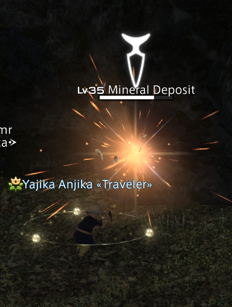
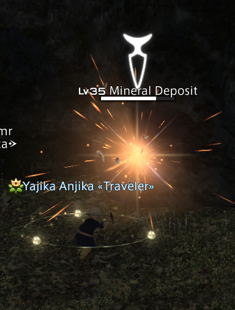

Reaching level 50 in Mining should take you between 1-2 hours, depending on if you have the "The Road to 80" active. It is highly recommended that you have finished your final "A Realm Reborn" MSQ, as you'll need to have unlocked levequests in multiple regions, and flight will make the process go much faster. The process of completing levequests as a miner is very guided and easy. I recommend completing the job quests as you unlock them to get better gear. The job quests can be made much easier by buying the required items at a market board.
1-10: Talk to Linette to get the "Way of the Miner" quest. By the time you finish the first two quests, you should be level 5 so you can do level 5 job quest. If you aren't going to be level 5 by the end of those quests, make sure to mine a little extra to make sure you will. Do the same to reach and complete the level 10 job quest.
10-20: Now we can get started on levequests! level 10 levequests are offered by Totonowa at Horizon in Western Thanalan, coordinates (x23,y16). Repeat these levequests until you reach level 20.
20-30: We're going to repeat the same process but with levequests offered by Nyell at Quarrymill in South Shroud, coordinates (x25,y20). Nyell is really convenient, as he offers both level 20 and level 25 levequests!
30-40: We're now moving on to levequests from Nahctahr at Costa del Sol in Eastern La Noscea, coordinates (x30,y30).
40-50: Level 40 levequests are offered by Voilinaut at Whitebrim Front in Coerthas Central Highlands, coordinates (x12,y16), and level 45 levequests are offered by K'leytai at Saint Coinach's Find in Mor Dhona, coordinates (x29,y12).
 
